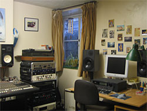
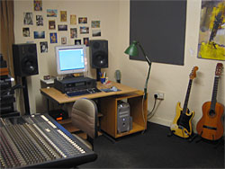
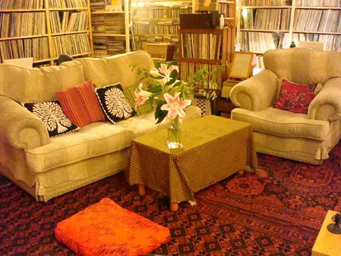

The V.I.P Lounge
The V.I.P Lounge
Parade Chambers, 10 Parade St, Penzance, TR18 4BU
www.viplounge.org.uk
The VIP Lounge was founded in 2001 by Dare Mason, resident engineer and producer. Since then all sorts of projects have been recorded there from poetry and children's songs through to folk, indie and metal. The studio is best known for producing bands though. These include Thirteen Senses, My Elvis Blackout, I Say Marvin and Dare's own projects Noctorum and FOLD.
Dare used to be a house engineer at the Townhouse Studios in London where he worked with Paul McCartney, Prince and The Blow Monkeys amongst many others. As a freelance producer, he has produced tracks for Placebo, The Church, AC Acoustics and Cinerama.
The VIP Lounge is closely tied to the vibrant music scene in Cornwall and the South West of England and has links to local radio, agents, managers, music websites, educational initiatives etc.
This site has been set up to promote local acts that have recorded here as well as the studio itself. If you would like more information about the VIP Lounge (rates, equipment etc) please go to our main website.
|

|

|
|  | |
text & images © Dare Mason